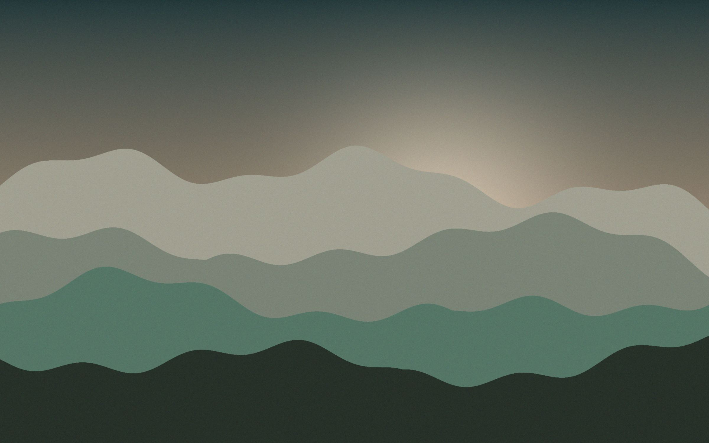
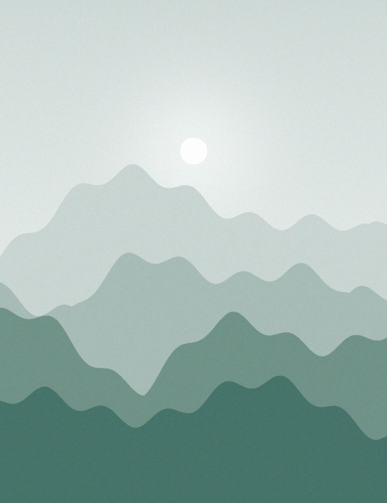
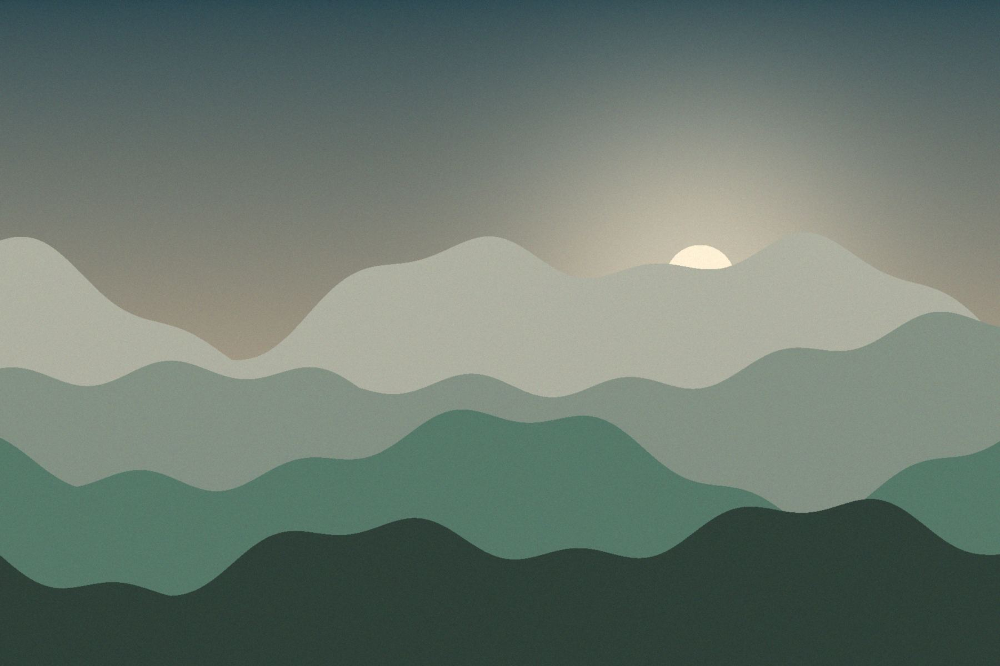
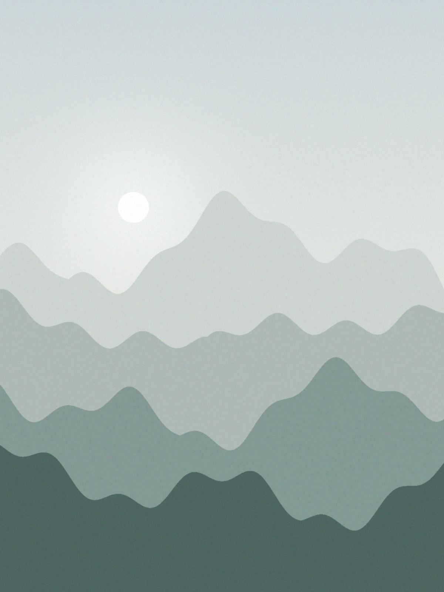
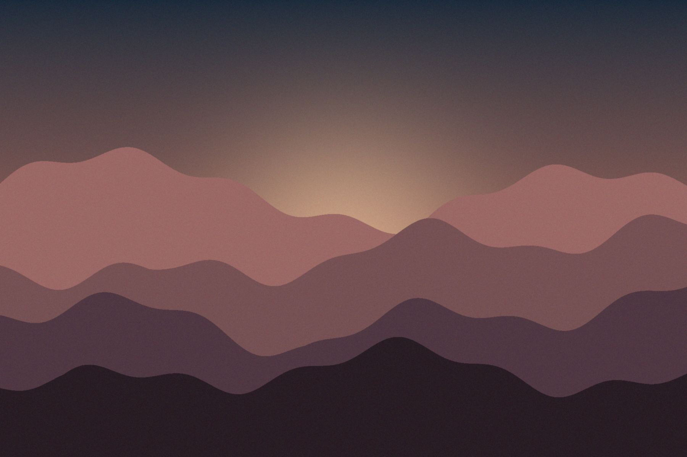
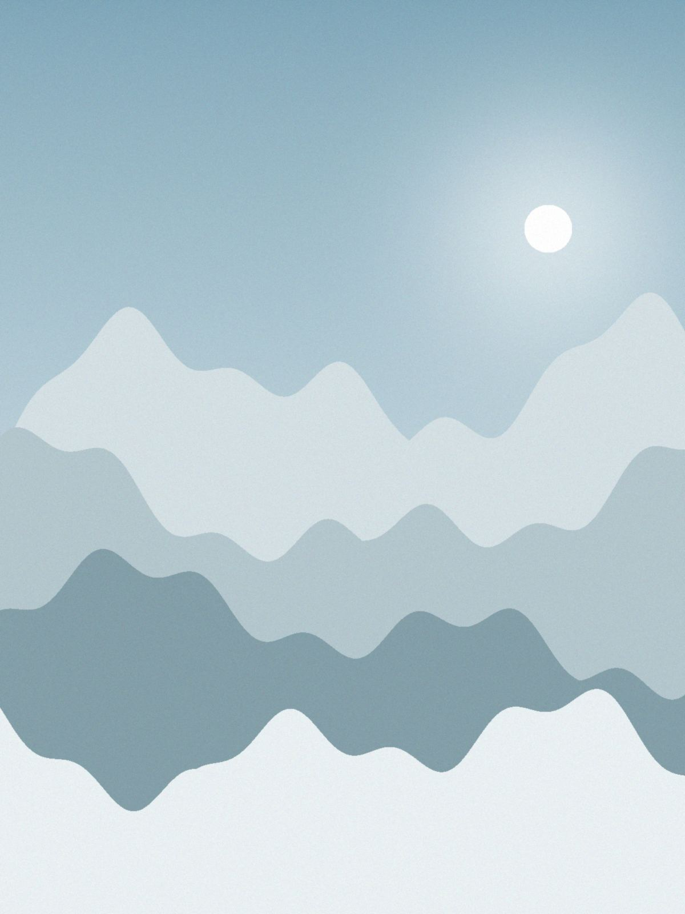

StephanieGläser
Fotografin · Reisebloggerin

01 — Über mich
Zwischen Fernweh und Feinsinn.
[Wer du bist und wie du zur Fotografie gekommen bist – zwei, drei persönliche Sätze.]
[Wofür deine Bilder stehen: Licht, Stimmung, Menschen, Landschaften …]
[12]Jahre Kamera
[40+]Länder
[1]Reiseblog
02 — Portfolio
Ausgewählte Bilder




![[Bildbeschreibung]](bilder/foto-05.jpg)
![[Bildbeschreibung]](bilder/foto-06.jpg)
![[Bildbeschreibung]](bilder/foto-07.jpg)
03 — Lebenslauf
Belichtete Jahre
Beruf
seit [2020]
Freie FotografinSelbstständig · [Ort]
[Schwerpunkte, Kunden, Veröffentlichungen.]
seit [2015]
Gründerin & AutorinAugenliebe Reiseblog
Reportagen, Fotografie, Social Media.
[2014] – [2020]
[Position][Unternehmen] · [Ort]
[Kurzbeschreibung.]
Ausbildung & Auszeichnungen
[2019]
[Auszeichnung / Ausstellung][Veranstalter]
[Details.]
[2010] – [2014]
[Studium / Ausbildung][Hochschule] · [Ort]
[Schwerpunkt.]
04 — Kenntnisse
Handwerk & Ausrüstung
Fotografie
Ausrüstung
- Kamera [Modell]
- Objektive [16–35 · 50 · 70–200]
- Software Lightroom · Photoshop
Sprachen
- Deutsch Muttersprache
- Englisch [Niveau]
- [Sprache] [Niveau]